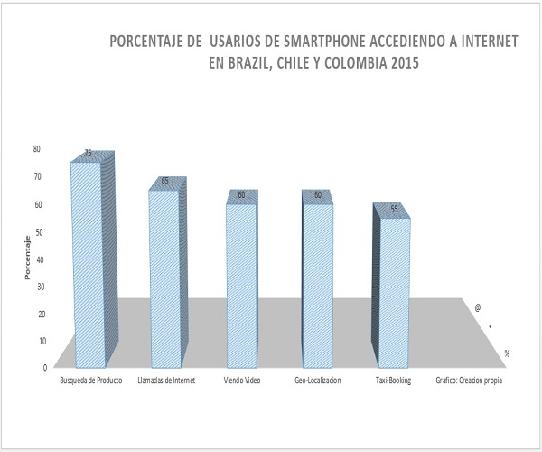

En el presente post quiero resaltar las estadísticas de crecimiento de datos gracias a la evolución de las comunicaciones móviles y sus generaciones, siendo un motor de la economía y liderando el crecimiento de las telecomunicaciones a nivel mundial.
Echemos un vistazo de los principales estadísticas proyectadas por los expertos empresas del sector en Comunicaciones a nivel mundial y nacional, entre los exponentes para el caso latinoamericano y el Caribe como por ejemplo Brazil, Chile y por supuesto Colombia países que encabezan el listado de mayor consumo en este sector de las tecnologías de la innovación y comunicaciones.
A pesar de la recesión económica que se ha registrado en la región en mención desde los anos 1995 y que ha afectado a algunos países debido a la contracción económica, inflación y devaluación para mencionar la crisis de Venezuela, también la dependencia de Colombia con los comodities y la crisis del petróleo, la crisis de la recesión de Brasil, casos para destacar, por tal razón hay una cierta preocupación en el sector de las tecnología de la información y comunicaciones en relación a los niveles de inversión, sin embargo se es consciente a la vez de la importancia en el desarrollo de la economía pues la tecnología móvil ya esta jugando un papel importante en la sociedad, economía y ventajas medioambientales. Se estima que para el ano 2022 existan alrededor de 720 millones de suscriptores de móviles banda ancha y alrededor de 100 millones de suscriptores de celular para internet de las cosas en la región.
Los consumidores latinoamericanos se están moviendo rápido hacia una sociedad en red, la vida es mas digitalizada que antes y muchas actividades son conducidas de manera online mas que los canales tradicionales como lo son la televisión y radio, asi que el mercado de celulares inteligentes están en crecimiento esto representa casi el 60% de el total de subscritores de móviles, de esta manera se mejora la conectividad y elección de aplicaciones móviles.
Para muchos consumidores los teléfonos inteligentes constituyen su primera experiencia y manera facil para acceder a los servicios de internet, servicios digitales. El internet de las cosas se considera otra área de oportunidad de crecimiento para el sector de las tecnologías de la comunicación e innovación, se estima que para el ano 2022 aproximadamente 18 billones de celulares y no celulares (por ejemplo relojes) estarán conectados por medio de los dispositivos por todo el mundo.
El incremento de uso de los teléfonos inteligentes y aplicaciones esta inundando el mercado, por consiguiente el uso para diferentes actividades esta creciendo y los servicios digitales no son exclusivos para los usuarios avanzados por lo tanto esta llegando a las masas provocando un impacto en el trafico de los datos.
Algunos analistas del sector tecnología pronostican que para el ano 2022 casi todo el trafico móvil regional se espera de los datos con vos representado menos del 1%. Alrededor del 95% del trafico de datos será generado por teléfonos inteligentes y solo el 5% será linqueado de tables y computadoraes. Adicionalmente el trafico de datos por teléfono inteligente activo se espera que se incremente en 6 veces desde 1.6 gigabytes por mes a 9.6 gigabytes por mes para el ano 2022.

Por lo anterior enfoquémonos ahora en el caso Colombiano ano analizado hasta el momento 2016, de acuerdo a las estadísticas realizadas por el DANE para las regiones del Caribe, Oriente, Centro, Pacifico, Orinoquia, Bogota, Antioquia, Valle del Cauca y San Andres en las que se encuestaron a viviendas, hogares y personas el 49,1% utiliza el computador y el 58.1% el internet catalogado esto como tecnologías de la información y comunicación de personas entre los 5 anos y mas de edad que son usadas y adaptadas de manera frecuente, diversificada y significativas en el diario vivir. De esta manera es considerado que gracias a esta interacion se promueve de manera positiva la calidad de vida de las personas y hogares. De acuerdo a lo anterior las regiones de San Andres y Pacifica con un 42,3% y 42,9% respectivamente ocuparon las menores proporciones de uso de computador en cualquier lugar, mientras que Orinoquia y Amazonia con un 53,3% y Valle del Cauca con un 52,3%. Bogota registro un 62,3% de las personas que usaron computador.
A su vez para el total nacional en el 96,5% de los hogares al menos una persona poseía un aparato telefónico portátil con servicio publico automatico de telefonía móvil, con esto accediendo a red de telefonía publica conmutada utilizando tecnología celular. Ahora bien para hacernos a una idea por rango de edades para el total nacional entre los 25 -54 anos un 45,7% y 60,2% de personas usaron el computador e internet respectivamente, a su vez un 73,4% contra 82,8% hizo uso del computador e internet en rangos de edad de 12 y 24 anos y un 58,8%- 55,1% para edades entre 5 y 11 anos de edad.
Continuando con otra variable como lo es la tenencia y uso del teléfono celular, el 72,1% de las personas mayores de 5 anos y mas a nivel nacional, poseen celular convecinal y celular inteligente, mientras que un 63,5% con tenencia de celular inteligente y un 37,5% poseen un celular convencional. Ahora por regiones se describe que Antioquia y el Caribe presentan una menor proporción de uso del teléfono celular con un 82,9% y 79,6% respectivamente, mientras que la zona Oriental con un 87,6% y Orinoquia-Amazonia 88,6% seguida del Valle del Cauca con un 89,7% de uso del celular, Bogota fue la ciudad ganadora con un 91,6% de personas de 5 y mas anos que registraron el mayor uso de celular.
Otra variable a resaltar son los sitios de uso de internet y dispositivos utilizados para conectarse: para el total nacional el 25,3 de personas de 5 anos y mas se conecto desde su instituciones educativas mientras que el 28,1% lo hizo desde su trabajo y un 74,7% accedió desde su casa a internet . El medio mas utilizado para acceder a internet es por el teléfono celular con un 70,4%, un 53,2% de personas utiliza el computador de escritorio y un 30,6% lo hace a través de un portátil. Ahora bien entre las actividades realizadas a través de internet, para el total nacional el 65,9% lo hizo para obtener información, el 66,4% para acceder a correo electrónico y el 75,4% lo hizo para iniciar sesión en redes sociales esto aplica para personas de 5 anos y mas.
Como conclusión de lo anterior cabe mencionar que en muchos de los nichos de mercado el 50% de las visitas en buscadores se realizan desde dispositivos móviles, y lo mas grave, es que los anunciantes (empresarios, comerciantes, independientes) no son conscientes de la evolucion del search (busqueda en internet) y no están preparados o no son conscientes de este nuevo reto. Por ello la pésima experiencia de estos usuarios hace que las campanas funcionen menos de lo que se espera. Asi que si acaso quieres mejorar el trafico en tu sitio web impulsando las ventas de tus productos y servicios por medio de la busqueda de voz semantica y predictiva te invito a que busques asesoria.